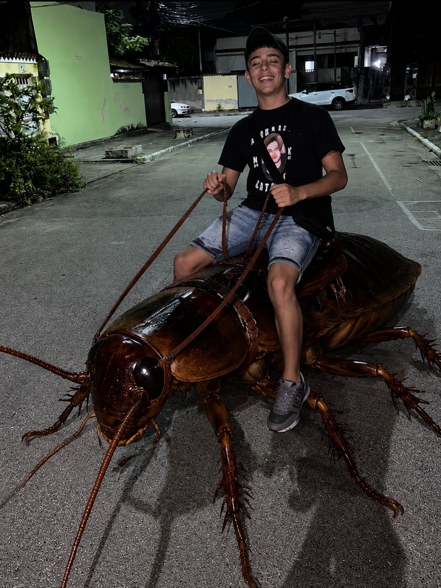

Ovo je lični sajt Nikole Vlaisavljevica i njegov prvi web projekat napravljen u HTML-u.
Nikola Vlaisavljevic je osoba koja uči web development i HTML tehnologije. Ovaj sajt predstavlja njegov prvi korak u pravljenju web stranica i objavljivanju na internetu putem GitHub Pages platforme.

Viljuške su svakodnevni kuhinjski pribor koji se koristi za jelo. One mogu biti napravljene od metala, plastike ili drveta. Postoje različite vrste viljuški kao što su obične, desertne, riblje i kuhinjske viljuške.
Viljuške se koriste širom sveta i predstavljaju standardni deo pribora za jelo. Njihova upotreba datira još iz drevnih civilizacija i danas su neizostavan deo svake kuhinje.
Ovaj sajt je napravljen koristeći HTML i hostovan je na GitHub Pages platformi. Sadrži osnovne informacije i edukativni sadržaj.
Ime: Nikola Vlaisavljevic
Projekat: Lični sajt
Status: Učenje web development-a